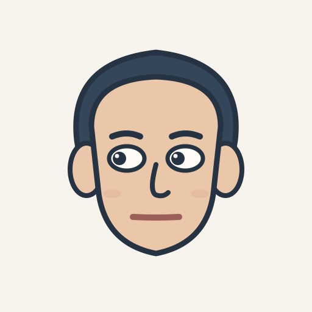
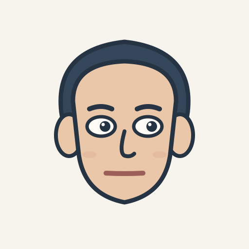

给注意力一点探索的时间
专注此刻，
发现注意力。
注意力，如何改变我们看到的世界？
选择一项实验，开始注意力探索。


面孔变化检测实验
视觉搜索实验
LOCAL DATA ARCHIVE
实验记录与数据导出。
匿名试次数据提交至课程 HW2 收数平台；本机同时保留完整备份。即使实验中断，也可以在这里找回已经记录的部分并重试提交。
正在读取本机记录…
COURSE DATA COLLECTION
课程 HW2 数据收集
正在检查项目配置…
隐私说明：匿名试次数据会按课程要求提交至 HW2 收数平台；完整 Session、事件日志和眼动原始样本仍保存在当前浏览器，建议定期导出备份。项目编号不是下载密钥；请勿将下载密钥写入公开网页或 GitHub。眼动数据仅在参与者主动同意并成功启用采集后产生。